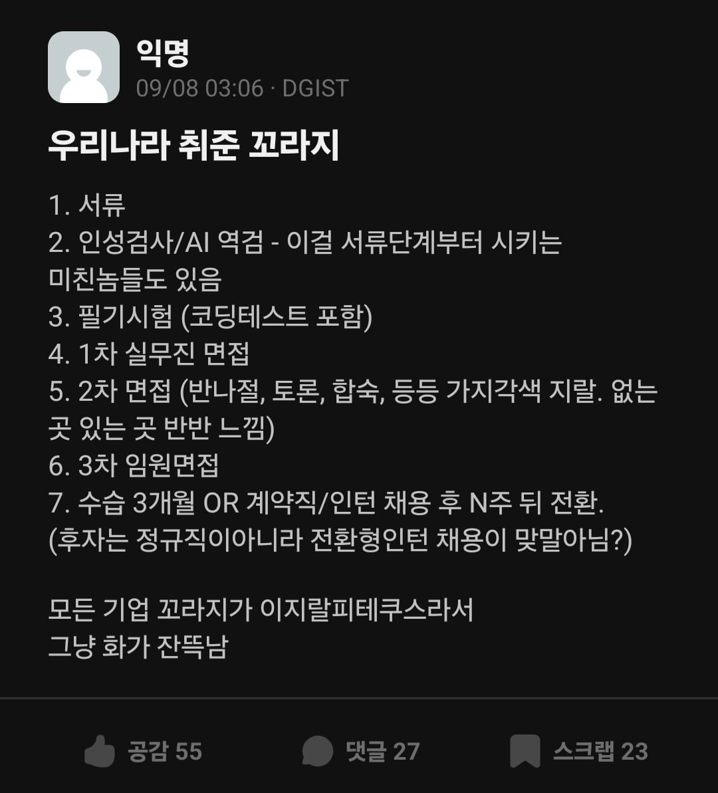

채용형 인턴 (채용 안될 수 있음)

채용형 인턴 (채용 안될 수 있음)
난 일중인데 ㅎㅎ
너한테 한소리 아닌데 ㅋㅋ 자의식 과잉인듯
ㅋㅋㅋㅋㅋ그래그래~
대기업 이상 다니는거 맞지?
신입도 아니고 채용형 인턴 뽑는데 존나 과해 진짜
저지랄인 공채마저 구인의 단 3%(97%는 경력직 채용)
지인 하청에 있다가 6차면접보고 대감집으로 들어감ㄷㄷ 대단쓰
일자리는 적은데 일할 사람은 많아서.. 구직자가 너무 많아서 거를 필터망이 많이 필요해짐... 회사 지원한 사람 중 수도권대학 박사도 6개월 백수인거보고 놀랐다..
직장 구하는 놈들도 각성 좀 해야됨
좆병신 새끼들 존나 많음
그렇게 멀리서 면접보러 기차 타고 올 정도로 의지가 있으신 분이 옷은 씨발 지 친구 쳐만날때나 입을 옷을 걸치고 와
그래 많이 쉬어라 ㅋㅋ